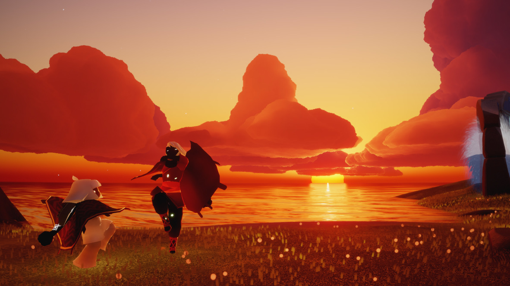

All screenshots in the gallery are taken by me, with the exception of background images.
Welcome to the gallery! Here is a collection of quick snapshots from my Sky journey, memories that I treasure dearly. I hope you'll find comfort in browsing through them and that they'll remind you of your own journey!

Starlight Desert: one of my favorite spots to visit in the Vault of Knowledge. It is themed after The Little Prince book. The first three pics here were my first screenshots of this game, back when I was still a wee moth.

The stars here are so pretty... I'm in love with the deep purple hues in the sky.
The king's throne. He was all alone on his own little planet.

This was a little later into my journey when I started caring more about cosmetics and my appearance, but my love for Sky's world remains unwavering.

I think some glitch happened and I clipped through the floor. I found it strange enough to take a picture.

The eternal rain in Hidden Forest is such a vibe... if the rain didn't kill me, I'd prance around here forever.

Sunsets in Sky are one of the most vibrant and striking images that have ever been burned into my retinas. My moth self couldn't fully comprehend their beauty...
Thanks to peer pressure from some particular friends (see Multiplayer gallery), I decided to doll myself up a little bit using my hard-earned candles to spend on cool garments.
Even though I enjoyed Sky mostly for its atmosphere, it wouldn't hurt to try expanding my wardrobe too.

Back at the first realm you visit, there's a cave with luminous engravings on the walls. They tie into the lore of Sky, but honestly I just found them cool.
I felt compelled to capture the marvelous scenery here... one thing that Sky does right is the breathtaking visuals. My time alone has simply allowed a deeper appreciation of the environment around me.
This was part of the Little Prince quest branch. At the end, you have to brace Eden with the Little Prince, and you end up entering the reincarnation cycle all over again.

A very touching image... the Little Prince reaches out his hand, inviting you to enter the next life cycle. His quests were one of my biggest highlights of playing solo.
And although you're technically "alone", the Little Prince accompanies you throughout all of his quests, which makes saying goodbye to him at the end very bittersweet. Sorry, looking back on this is making me a little emotional...
Me, Flo, Swatch, and Omar set up a chat table and talked with each other for a while. Flo was kinda the one who dragged me into this friend group, but I appreciated her so much for that. Back when this was taken, Days of Color was still called Days of Rainbow.

I first met my friend Flo (the chibi in the middle) when I was flying around the Crab Fields in Golden Wasteland. We talked at a chat table and became friends. Not long after, she wanted to
introduce me to one of her other close friends named Swatch. Here's my first time getting to know Swatch on a bench, and we all became good friends ever since.

If you could tell by my plain red cape here, I was still a "moth" or a newbie. Flo, having more experience, flew me around an out of bounds area to show me a nice view. She and Swatch are the reasons why I started playing Sky seriously again.

Even the smallest interactions can stick with you for a long time. I found someone at home and ended up goofing around with them for a bit.
Things like that make this game very special to me, that complete strangers can still bond over simple gestures and expressions.

Me and Swatch were spamming some random emojis for some reason. There's a quirky (but also) tiring thing we always do whenever we visit each other where
we just spam our calls and keep honking at each other until we get bored or one of us gives up, so that was fun.

Swatch is in rainbow pants and Flo has the Forgetful Storyteller outfit on. We had just made it to the end of the infamous Fire Trial after
painstakingly navigating through the darkness with a weak candle... we died very many times :]
This was my laptop wallpaper for a very long time. To me, this shot with my new friend Solaris encompassed the essence of making connections in Sky.

Here is me and Solaris chatting at the top of the mountain slide. Friends come and go, but the memories remain.
Sometimes it can feel lonely in a mostly large and empty world like Sky. I find beauty in that, but player to player connection is a core component of a "social" game like this one. If you're not sure where to start, I suggest you go check out the About me/More info page,
where I introduce myself properly and elaborate on how I became the corrupted wanderer I am now.